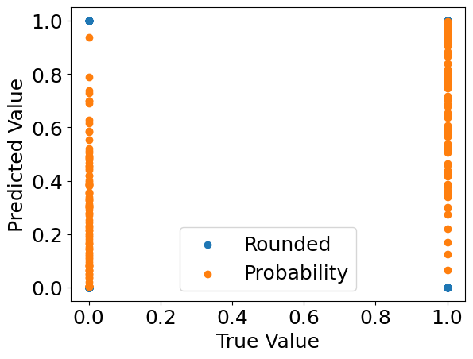
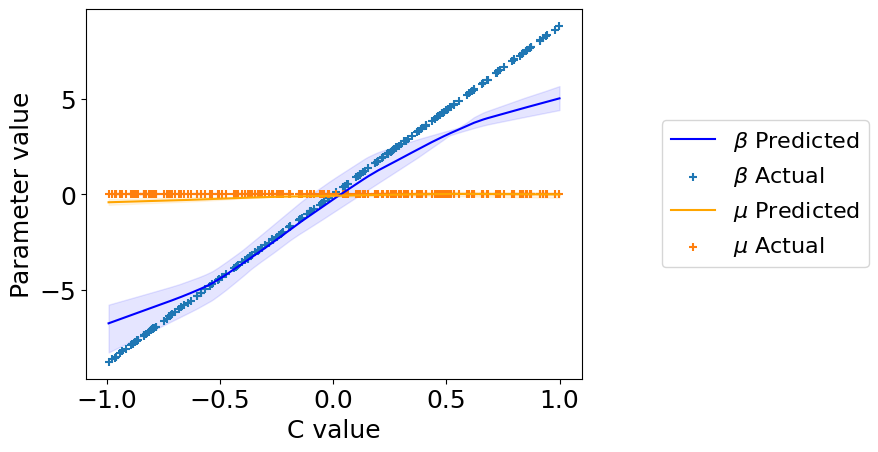

Contextualized Classification#
Contextual models allow to identify heterogeneous effects which change between different contexts. The contextualized package provides easy access to these heterogeneous models through the contextualized.easy module interfaces. This notebook shows a simple example of using contextualized.easy classification.
1. Generate Simulation Data#
In this simulated classification, we’ll study the simple varying-coefficients case where \(\text{logit}(Y) = X\beta(C) + \epsilon\), with \(\beta(C) \sim \text{N}(C\phi, \text{I})\), and \(\epsilon \sim \text{N}(0, 0.01 \text{I})\)
import numpy as np
n_samples = 200
n_context = 1
n_observed = 1
n_outcomes = 3
C = np.random.uniform(-1, 1, size=(n_samples, n_context))
X = np.random.uniform(-1, 1, size=(n_samples, n_observed))
phi = np.random.uniform(-10, 10, size=(n_context, n_observed, n_outcomes))
beta = np.tensordot(C, phi, axes=1) + np.random.normal(0, 0.01, size=(n_samples, n_observed, n_outcomes))
Y = np.array([np.tensordot(X[i], beta[i], axes=1) for i in range(n_samples)])
Y_prob = 1. / (1+np.exp(-Y))
Y = np.random.uniform(0, 1, size=(n_samples, n_outcomes)) < Y_prob
2. Build and fit model#
Uses an sklearn-type wrapper interface.
%%capture
from contextualized.easy import ContextualizedClassifier
model = ContextualizedClassifier(alpha=1e-3, l1_ratio=0.0, n_bootstraps=3)
model.fit(C, X, Y, max_epochs=100, learning_rate=1e-3)
3. Inspect the model predictions.#
%%capture
preds = model.predict(C, X)[:, 0] # predicted labels
probs = model.predict_proba(C, X)[:, 0, 1] # predicted probabilities
import matplotlib.pyplot as plt
%matplotlib inline
plt.rcParams.update({'font.size': 18})
plt.scatter(Y[:, 0], preds, label='Rounded')
plt.scatter(Y[:, 0], probs, label='Probability')
plt.xlabel("True Value")
plt.ylabel("Predicted Value")
plt.legend()
plt.show()

4. Check what the individual bootstrap models learned.#
%%capture
model_preds = model.predict(C, X, individual_preds=True)
# predict() automatically rounds the predictions for classifiers.
# If you want probabilities, use predict_proba()
5. Check what parameters the models learned.#
%%capture
beta_preds, mu_preds = model.predict_params(C, individual_preds=True)
beta_preds.shape # (n_bootstraps, n_samples, n_outcomes, n_predictors)
mu_preds.shape # (n_bootstraps, n_samples, n_outcomes)
order = np.argsort(C.squeeze()) # put C in order for plotting
C = C[order].squeeze()
beta_preds = beta_preds[:, order]
mu_preds = mu_preds[:, order]
beta = beta[order]
plt.plot(
C, np.mean(beta_preds[:, :, 0], axis=0),
label='$\\beta$ Predicted', color='blue')
plt.fill_between(
C,
np.percentile(beta_preds[:, :, 0], 2.5, axis=0).squeeze(),
np.percentile(beta_preds[:, :, 0], 97.5, axis=0).squeeze(),
color='blue', alpha=0.1
)
plt.scatter(C, beta[:, :, 0], label='$\\beta$ Actual', marker='+')
plt.plot(
C, np.mean(mu_preds[:, :, 0], axis=0),
label='$\\mu$ Predicted', color='orange')
plt.fill_between(
C,
np.percentile(mu_preds[:, :, 0], 2.5, axis=0).squeeze(),
np.percentile(mu_preds[:, :, 0], 97.5, axis=0).squeeze(),
color='orange', alpha=0.1
)
plt.scatter(C, np.zeros_like(C), label='$\\mu$ Actual', marker='+')
plt.legend(loc='center right', bbox_to_anchor=(1.6, 0.5), fontsize=16)
plt.xlabel("C value")
plt.ylabel("Parameter value")
plt.show()
